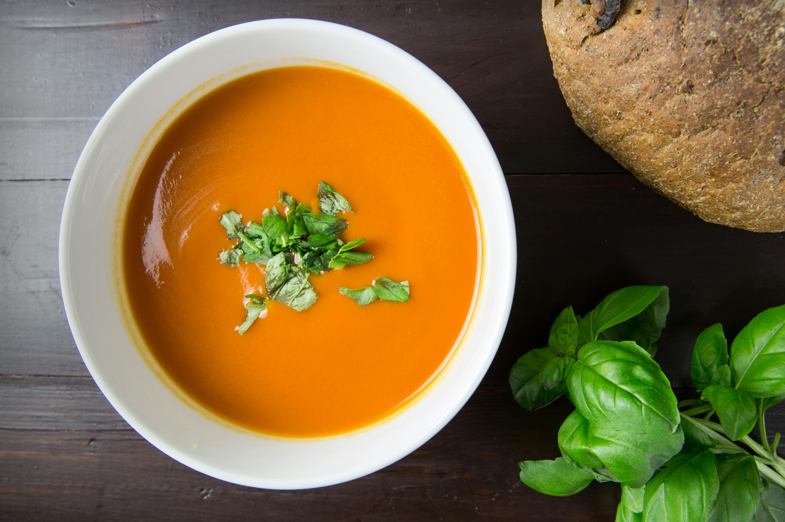

Tomato Soup

This tomato soup recipe makes a rich, smooth, comforting soup that's quick
to make when you have ripe summer tomatoes. Delicious topped with fresh
basil and a grilled cheese sandwich for the ultimate homemade comfort
food.
Ingredients
- Tomatoes
- Chicken Broth
- Garlic
- Onion
- butter
- Flour
- Sugar and Salt
Steps
- Boil the tomatoes, onion, garlic, and broth.
- Run the mixture through a food mill into a large bowl.
- Make a roux.
- Add the tomato mixture and season.
Home